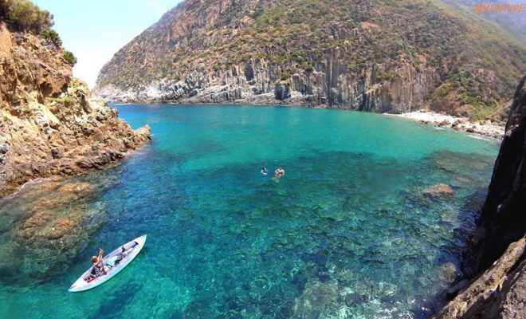

Annaba, anciennement Bouna surnommée « Medinet Zaoui » ou encore « Bled El Aneb » et Bône lors de la colonisation française, est la quatrième ville d'Algérie en nombre d'habitants après la capitale Alger, Oran et Constantine. Son littoral et ses plages en font une destination prisé pour la détente
Restaurée en octobre 2013, la basilique de Saint-Augustin est un must-see de la ville, dominée par elle. L’édifice religieux doit son nom à Saint-Augustin d’Hippone, natif de Souk Ahras et évêque d’Hippone durant 34 ans.
C'est une ville prisée possédant un magnifique front de mer, une corniche et un centre-ville branché. Il est également possible de faire le détour dans la baie de l'Ouest et de Djenane El-Bey à Oued Begrat.
La vieille ville d'Annaba est la principale attraction, surnommé la Kasbah, certaines bâtisses d'architecture ottomane ont été construites au XII ème siècle.
Bien reliée à Alger (à 600 kilomètres) par voie terrestre ou aérienne, Annaba est également desservie par des vols en provenance de France, via la compagnie Air Algérie. Pour rejoindre la Tunisie (Tabarka), il ne reste qu'une centaine de kilomètres.